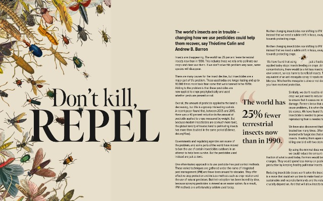
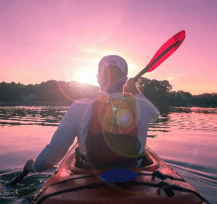
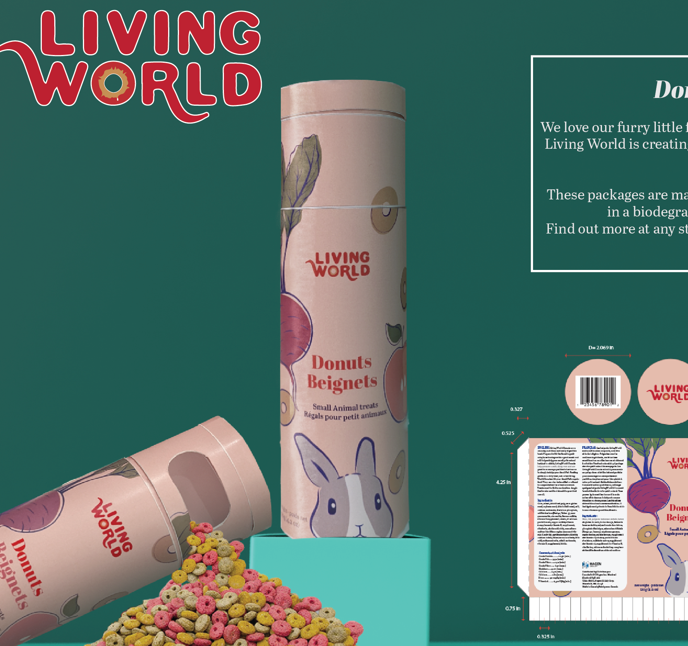
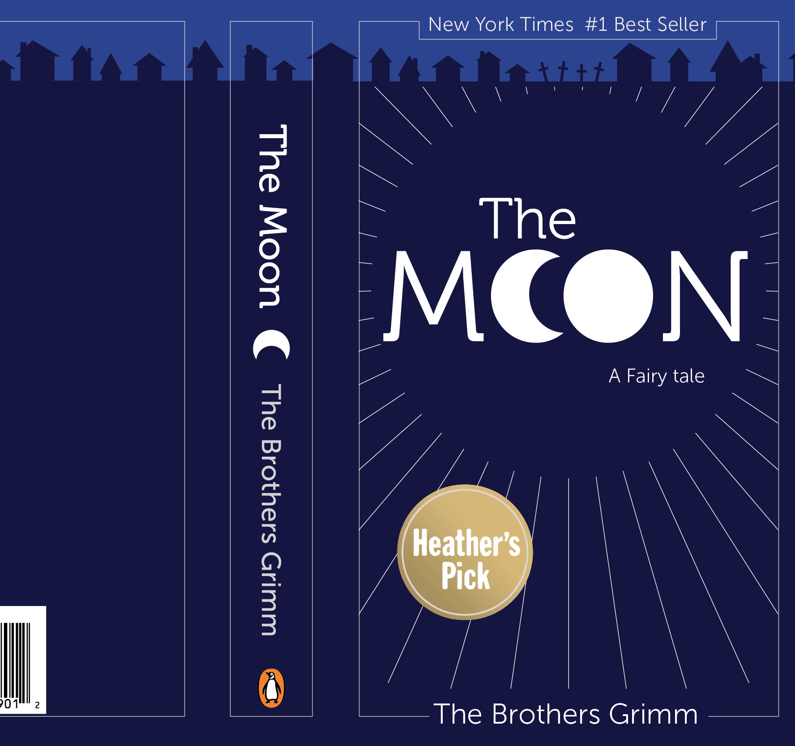
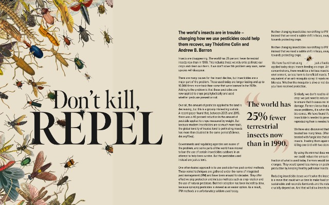
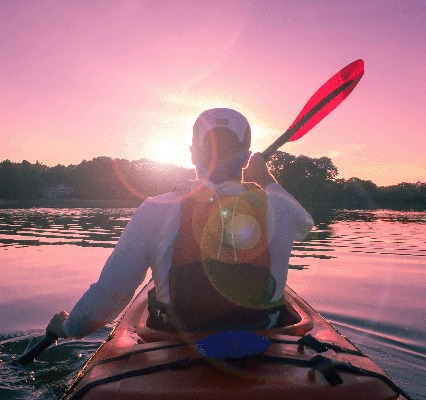
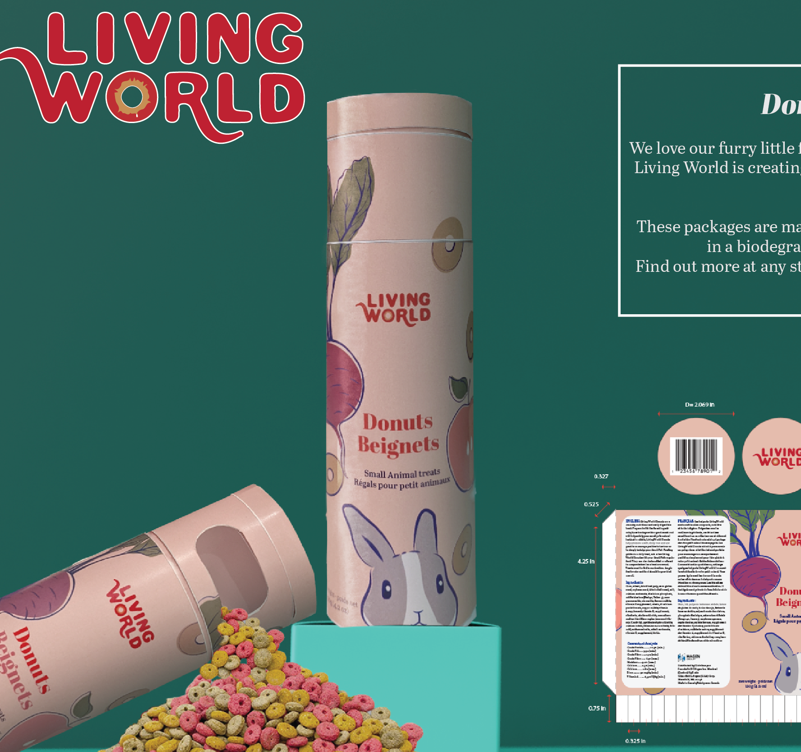
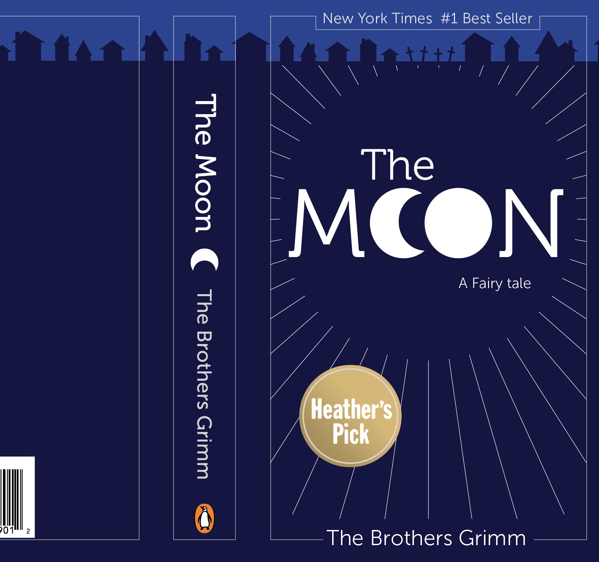

Logo Creation
Your logo is the face of your brand and the first thing that potential customers will see, so it's crucial to make a great first impression. I can help create a logo that is both visually stunning and effective in representing your brand.
$X,XXX
Learn more 






